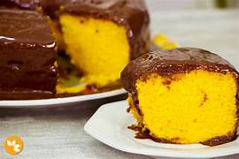

Ingredientes das Receitas
Aqui você encontra todos os ingredientes necessários para preparar nossas deliciosas receitas.
Bolo de Chocolate
Ingredientes da Massa:
- 3 ovos
- 1 xícara de açúcar
- 1/2 xícara de óleo
- 1 xícara de leite morno
- 1 xícara de chocolate em pó
- 2 xícaras de farinha de trigo
- 1 colher de sopa de fermento em pó
Ingredientes da Cobertura:
- 1 lata de leite condensado
- 4 colheres de sopa de chocolate em pó
- 1 colher de sopa de manteiga
- 1/2 xícara de leite
Modo de Preparo
1. Preparando a Massa: Em uma tigela, bata os ovos com o açúcar até formar um creme. Adicione o óleo, o leite morno e o chocolate em pó. Misture bem. Adicione a farinha de trigo aos poucos e o fermento em pó, mexendo até obter uma massa homogênea.
2. Assando o Bolo: Unte uma forma com manteiga e farinha. Coloque a massa na forma e asse em forno pré-aquecido a 180°C por cerca de 30 minutos ou até o bolo passar no teste do palito (ao enfiar um palito, ele deve sair limpo).
3. Preparando a Cobertura: Em uma panela, coloque o leite condensado, o chocolate em pó, a manteiga e o leite. Cozinhe em fogo baixo, mexendo sempre até formar uma calda cremosa. Retire do fogo.
4. Montagem: Quando o bolo estiver pronto e já frio, cubra com a cobertura de chocolate. Sirva e aproveite!
Bolo de Sorvete

Ingredientes
Para a base do bolo:
- 1 pacote de biscoito de maisena ou biscoito champanhe
- 1/2 xícara de manteiga derretida ou margarina
Para o sorvete:
- 1 litro de sorvete de sua preferência (creme, chocolate, morango, etc.)
- 1/2 xícara de chocolate granulado ou cobertura de chocolate (opcional, para decorar)
Para a cobertura (opcional):
- 1 lata de creme de leite
- 1 barra de chocolate meio amargo ou ao leite (para derreter e cobrir)
- Frutas ou raspas de chocolate (opcional, para decorar)
Modo de Preparo
1. Prepare a base do bolo: Triture os biscoitos de maisena e misture com a manteiga derretida até formar uma farofa úmida. Forre o fundo de uma forma com essa mistura, pressionando bem para formar uma camada compacta. Leve à geladeira enquanto prepara o sorvete.
2. Prepare o sorvete: Retire o sorvete da geladeira por alguns minutos para amolecer um pouco. Espalhe o sorvete de maneira uniforme sobre a base de biscoitos na forma.
3. Cobertura (opcional): Derreta o chocolate com o creme de leite até formar um ganache. Despeje a ganache sobre o bolo de sorvete e decore com chocolate granulado, frutas ou raspas de chocolate.
4. Finalização: Leve ao congelador por pelo menos 4 horas (ou até ficar bem firme). Retire da forma e sirva!